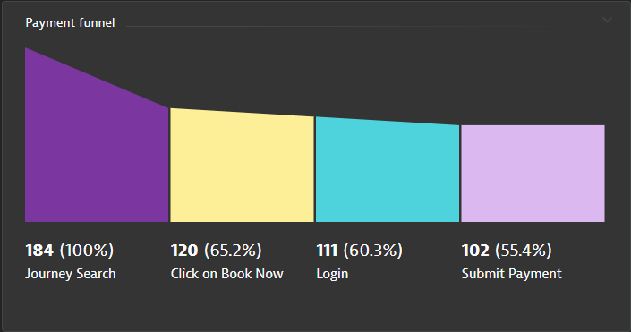
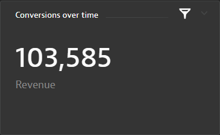

This Repo contains the labs we are going to work though as part of the BizOps – Bridging the Gap to the Business Hands On Workshop.
For the purposes of the Hands-On, we will automate and make the steps seamless for the participants
Prerequisites
- Access to a Dynatrace tenant/environment
Lab Setup
The following steps are used for this lab:
- Sample Application
- Sample App is based on Easy Travel
- There are 2 interfaces running for Easy Travel - Classic UI and Angular UI
What You'll Learn
- Bring business context to IT metrics
- Identify individual users for session analysis
- Conversion goals
- Session Replay
- Visualize the data and enhance collaboration between Ops and Line-of-business teams
- Action on the data
- Learn Dynatrace Capabilities such as
- Session Replay
- User Session Properties
- User Session Query Language (USQL)
- Dynatrace Dashboards
The goal of this exercise is to enhance the basic Real User Monitoring configuration in Dynatrace to bring business context to IT metrics. As such, we will not be going through the basic configuration of Dynatrace and have pre-setup the environment with the configuration:
- Organizing applications
- Enable JavaScript framework support​
- Logical grouping of user actions (configure User Action Naming​)
If you are interested in the basic setup, the following lab reference will be a good guide Digital Experience Management with Dynatrace
One of the key features of Dynatrace Real User Monitoring is the ability to uniquely identify individual users across different browsers, devices, and user sessions.
By default, Dynatrace assigns a unique, random ID to each new user. You can however assign more meaningful custom user tags that are comprised of, for example, user names or email addresses.
In this exercise, we will use the approach of tagging users based on page source. This approach to user tagging works by capturing available data in your application's page source.
The Easy Travel Angular app displays the user name at the top right hand corner. This is done via the text of a DOM element or a JavaScript variable.
To configure this in Dynatrace,
- Select Applications from the left navigation menu
- Select the EasyTravel Angular application
- Click the Browse button (...) and select Edit
- Under the Capturing header, look for User tag

- Click Add user tag rule
- Source type: CSS Selector
- CSS Selector field:
a.greeting - Toggle Apply cleanup rule on
- In the Regex box, copy the following
Hi, (.*+)
- Click on Add user tag rule button
- Remember to click on Save changes button
Once the configuration is complete, this is how it should look like: 
How to get CSS selectors?
### How to get CSS selectors?
- Assess the EasyTravel Angular homepage
- Click on the signin
- Login with username: alex and password: alex and click Next
- Right click on the name Alex Elliot and click inspect
- Right click on the td element and select Copy > Copy Selector
- list
- With some
- Sub bullets
Conversion goals are useful for understanding if users are meeting critical milestones in a user journey, for example, successful checkouts, newsletter signups, or demo signups
In this exercise, we will create conversion goals for the Easy Travel Angular application.
- In the same screen as the previous task, scroll down to Session Replay and behavior heading, and select Conversion Goals

- Click Add goal button and enter the following:
- Name:
Credit card validated - Type of goal: User Action
- Rule applies to: XHR actions
- Rule
- Page URL
- contains
easytravel/rest/validate-creditcard
- The completed configuration look like this

- Name:
Validating conversion goal setting
Check results aginst the application: EasyTravel Angular > User behavior

In this exercise, we will create session and user action properties to expose additional data to Dynatrace. This is useful for bringing additonal context regarding the users (e.g. campaign source, various items selected by users etc.) for analytics purposes.
Dynatrace has pre-defined a list of popular software that uses tags to give context to the sessions. Some of them are
- Google Analytics
- Adobe Analytics
- Tealeaf
- Etc.
These are under the Property pack tab.
For additional data sources that can be extracted from your application, use custom defined properties to define string, numeric, and date properties for your monitored user actions and user sessions.
Property values are then captured as part of each of your users' journeys. Property values can be leveraged for unrivaled visibility into all the details of your users' interactions with your application.
- In the same screen as the previous task, go to the Capturing heading, and select Session and action properties
- Click on the button Add properties
Property packs - Google Analytics/Adobe/UTM codes etc.
Since these are pre-defined, all we need to do is to select from the list. In this section, we will select the following:
- Click on the drop down, select web properties
- Under Configure properties, select the corresponding Add button for the following:
- UTM Source
- UTM campaign
- UTM term

- Click on Next
- Expand each of the items and toggle the store as user action property

- Click on Create properties
Custom properties - Transaction amount of each user
- Select the Custom defined property tab
- Select the Expression type: Server side request attribute
- Request attribute name: Revenue
- Display name:
Booking - (auto fill) Key: booking
- Storage type:
- Store as session property
- Click "Save property"
Here is how the completed configuration will look like: 
Custom properties - Browsed travel package amount
Following the above configuration, continue to add a CSS Selector type of custom properties
- Expression type: CSS Selector
- Data type: Double
- CSS Selector
#summary > div:nth-child(5) > p - Display name:
Trip Cost - (auto fill) Key: tripcost
- Storage type:
- Store as session property
- Click "Save property"
Here is how the completed configuration will look like: 
Custom properties - Travel destination browsed/booked
- Expression type: Server side request attribute
- Request attribute name: Destination
- Display name:
Destination - (auto fill) Key: destination
- Storage type:
- Store as session property
- Store as user action property
- Click "Save property"
Here is how the completed configuration will look like: 
Completed configuration screen
Once everything is configured, you should have this list of session/useraction properties: 
In this exercise, we will cover configuring Session Replay in Dynatrace.
Follow the steps below to enable session Replay:
- In the same screen as the previous task, scroll down to Session Replay and behavior heading, and select Session Replay
- Toggle ON Enable Session Replay

- Scroll down to Recoding mask settings tab, select Mask user input

- Click on the Playback masking settings tab, select Mask user input

- Finally, scroll all the way down down and Click on Save

We are now ready to visualize the data collected in Dynatrace. In this exercise, you can see how conversion goals, session/action properties can provide much more insights and context to the IT metrics for analysis.
This is the dashboard that we will aim to create.


- Navigate to Dashboards on the left hand naviation menu
- Click on the buton Create Dashboard and enter a name and click on Create
- Drag a User Sessions Query tile and click on Configure tile

- Enter the following query:
SELECT FUNNEL(useraction.name like "*journeys*" AS "Journey Search", useraction.name = "click on book now (xhr: /easytravel/rest/journeys/)" AS "Click on Book Now", useraction.name = "click on sign in (xhr: /easytravel/rest/login)" AS "Login", useraction.name="click on book journey (xhr: /easytravel/rest/validate-creditcard)" AS "Submit Payment") FROM usersession
- Click on the run query button
- Rename this to
Payment funnel - Click on the save changes to dashboard button

Conversion over time

- While having the Dashboard in Edit mode, click on the previously created tile and click on the clone button, then click on the configure tile button

- Enter the following query:
select datetime(starttime, "E HH:mm", "10m"), count(*) as "Conversions" from usersession where useraction.matchingConversionGoals="Credit card validated" group by datetime(starttime,"E HH:mm","10m")
- Click on the run query button
- Select Line chart
- Rename this to
Conversions over time - Click on the save changes to dashboard button
Booking Revenue

- Clone the tile from above and click on configure tile
- Modify the query:
select sum (doubleProperties.booking) as Revenue from usersession
- Click on the run query button
- It will automatically select a Single value
- Rename this to
Booking revenue - Click on the save changes to dashboard button

Abandoned cart totals

- Clone the tile from above and click on configure tile
- Modify the query:
SELECT sum (doubleProperties.tripcost) as "Revenue Lost" from usersession where useraction.matchingConversionGoals IS NULL AND doubleProperties.tripcost > 0
- Click on the run query button
- It will automatically select Single value
- Rename this
Abandoned cart value - Click on the save changes to dashboard button

Users affected by an abandoned cart

- Clone the tile from above and click on configure tile
- Modify the query:
SELECT userid from usersession where useraction.name = "click on book journey (xhr: /easytravel/rest/validate-creditcard)" and doubleProperties.booking is null
- Click on the run query button
- Select Table only
- Rename this to
Users affected by abandoned cart - Click on the save changes to dashboard button

Let's challange DAVIS™️!
Access the EasyTravel Angular actual booking application
- Open Dashboards
- Click on the ...Welcome to the Dynatrace Workshop üî¨ Dashboard
- Click on the Booking Portals:✈ EasyTravel Angular link

- Book a travel package
- You can use userid alex or peter
- What do you notice?
- Try clicking on (3) Payment multiple times
- Before you close your browser, do the following:
- Open your browser's developer tools

- Go to Console tab
- Type the following:
dtrum.endSession()

Scenario #1
Conversions are dropping! And so is Revenue!

However, the monitoring dashboards of IT Operations team show all systems are green! 
Even if it is not an IT issue, something must be causing vistors to be frustrated and not completing the transactions.
Hint: Some dashboards in the Sample BizDevOps Dashboard might give a clue to what is happening.

Also, investigating some user sessions together with Session Replay might uncover some facts about your application that cannot be detected by logs or investigating application code.
Scenario #2
DAVIS has detected an Anomaly! You also have observed that there are users who are affected and have abandoned their booking process!
Hint: The dashboard that you created just now would have contain all the information for you to understand what is causing errors. You can start with the Problem tile and drill down from there. You can also investigate each individual user session.
We hope you enjoyed this lab and found it useful. We would love your feedback!